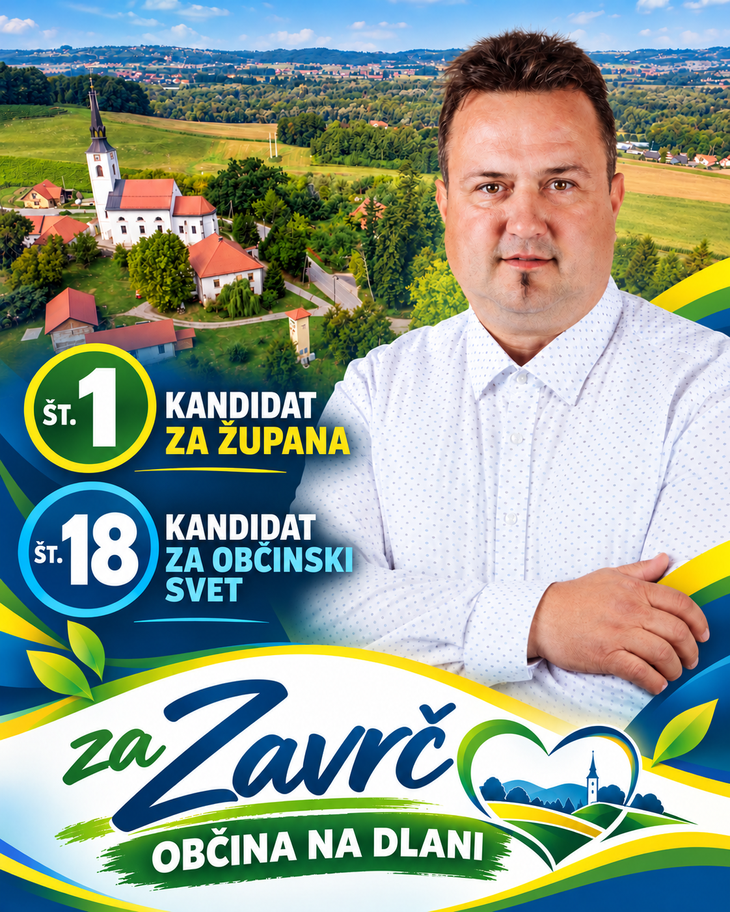
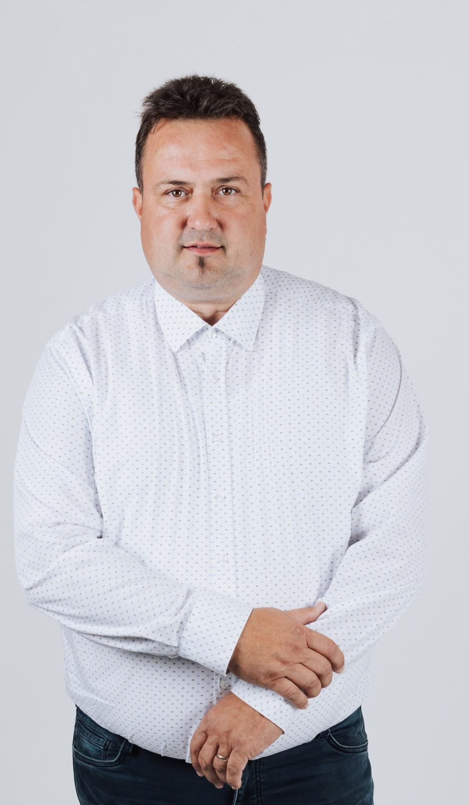

Več prostora za gradnjo
Boljši pogoji za gradnjo in ustvarjanje doma za mlade družine.
Občina na dlani.
V Zavrču sem doma. Tukaj sem odraščal, si ustvaril družino in tukaj vidim prihodnost naše skupnosti.

OBČINA ZAVRČ ✦ OBČINA NA DLANI ✦ PRISLUHNIMO DRUG DRUGEMU

V Zavrču živim že od rojstva. Tukaj sem odraščal, si ustvaril družino in tukaj je moj dom.
Dobro poznam naše kmete, mlade družine in starejše občane, saj z njimi delim vsakdanje življenje in podobne izzive.
Doslej nisem bil politično aktiven in tudi na lokalnih volitvah še nisem kandidiral.
Zakaj kandidiram? →Za kandidaturo sem se odločil, ker imam rad naš Zavrč in verjamem, da si naši ljudje zaslužijo več.
Skozi pogovore s sosedi in domačini sem začutil, da si ljudje želijo sprememb. Želijo si občine, ki jih posluša, se hitro odziva in jim je vedno na voljo.
Moja želja je, da imamo občino, ki je ljudem vedno na voljo, ki se hitro odzove in ki znova poveže vse naše vasi.
Damjan KopšaŽelim odgovorno nadaljevati že začete projekte in se posvetiti področjem, ki neposredno vplivajo na življenje naših občanov.
Boljši pogoji za gradnjo in ustvarjanje doma za mlade družine.
Organizirani prevozi do trgovine, zdravnika in zadruge s pomočjo prostovoljcev.
Sodelovanje s sosednjimi občinami in prizadevanja, da država projekt premakne naprej.
Pregledna poraba občinskih sredstev ter hitrejši odzivi na pobude in vprašanja občanov.
Podpora lokalnim priložnostim za razvoj domačega turizma in kmetijstva.
Tukaj bodo objavljena izbrana vprašanja občanov in Damjanovi odgovori nanje.
Odgovori se nalagajo ...
Imate vprašanje o Damjanu, njegovi kandidaturi ali prihodnosti Zavrča?
Pošljite mu svoje vprašanje. Izbrana vprašanja in odgovori bodo objavljeni na spletni strani.
Vprašanje lahko pošljete anonimno. Vaše ime in e-poštni naslov ne bosta javno prikazana.